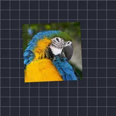

สั่นอัตโนมัติ

ขยับเลเยอร์แบบสุ่มตามเวลาภายในขอบเขตที่กำหนด
Auto-Shake จะขยับเลเยอร์ไปในทิศทางแบบสุ่มซ้ำๆ โดยไม่ต้องใช้คีย์เฟรม Magnitude คือระยะที่ขยับ Frequency คือจำนวนครั้งที่สั่นต่อวินาที และ Angle คือทิศทางหลัก Seed และ Evolution เปลี่ยนรูปแบบการสุ่ม และ Z Shake เพิ่มการสั่นในแนวลึก
- การสั่นของกล้อง: Magnitude 15 ถึง 30, Frequency 6 ถึง 10 บนกลุ่มที่ครอบฉากทั้งหมด
- อิมแพกต์: ทำแอนิเมชัน Magnitude จากค่ามากลงไปถึง 0 ภายในครึ่งวินาที
- เพิ่ม โมชันเบลอ ต่อจากนั้นเพื่อเบลอการสั่นแบบที่กล้องทำ
การตั้งค่า
| การตั้งค่า | ประเภท | ช่วงค่า | ค่าเริ่มต้น |
|---|---|---|---|
| ความแรง | ตัวเลข | 0 ถึง 2000 | 50 |
| ความถี่ | ตัวเลข | 0 Hz ถึง 16 Hz | 2 Hz |
| อีโวลูชัน | ตัวเลข | 0 ถึง 2000 | 0 |
| ซีด | ตัวเลข | 0 ถึง 5 | 0 |
| มุม | มุม | -3600° ถึง 3600° | 45° |
| ความหย่อน | ตัวเลข | 0% ถึง 100% | 25% |
| สั่นแกน Z | ตัวเลข | 0 ถึง 2000 | 0 |
| รูปแบบ | ตัวเลือก | คลาสสิก, มาตรฐาน | มาตรฐาน |